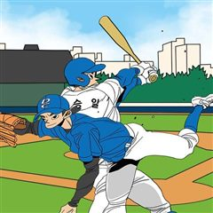
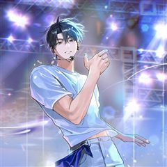
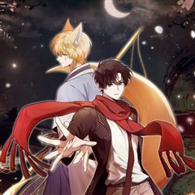

기프트 같은 웹툰 추천

기프트 · 정이리이리
기프트 재밌게 봤다면 이 웹툰들도 좋아할 거예요. 같은 장르이면서 성장물 같은 요소가 겹치는 작품을, 겹치는 요소가 많은 순서로 20개 골랐어요.
2026-10-10 기준 · 네이버웹툰·카카오웹툰·레진코믹스 · 성인 작품 제외
내 취향으로 직접 골라 추천받기 →-
1카카오웹툰
더 챌린저
'루저', '약자', '땅바닥'. 모두 현실에서 나를 부르는 호칭들이다. 하지만 그건 전부 '현실'에서의 이야기일 뿐. 가상현실 게임에서조차 '루저'라는 법은 없잖아? 게임 속에서 나는 최고가 된다! '루저' 박노아의 프로게이머 도전기. <THE C…
성장물판타지드라마카카오웹툰에서 보기 → · 더 챌린저 같은 웹툰 → -
2
 카카오웹툰
카카오웹툰0살부터 슈퍼스타
엘프, 요정, 슬라임, 선물상자, 마왕 등 수천 번의 환생에 이어 몇 번째인지도 모를 새로운 삶. 인간 아기로 태어난 나 이서준! 내가 살아온 기억들이 동화처럼 남아 있는 생의 도서관 속에서 가장 간절히 원했던 꿈이 있는 전생을 보게 된다. 거기다…
성장물판타지드라마카카오웹툰에서 보기 → · 0살부터 슈퍼스타 같은 웹툰 → -
3
 카카오웹툰
카카오웹툰신인인데 천만배우
계부 밑에서 어렵게 유년시절을 보낸 무영. 그에겐 삶이 지옥과도 같았다. 살아 있는 지옥에서 살 길을 알려준, 신비스러운 한 목소리. “네 인생 대신 다른 누군가의 인생을 살아." 그렇게 시작한 연기였는데…… 생존 본능과도 같은 것이었을까. 잘해도,…
성장물판타지드라마카카오웹툰에서 보기 → -
4
 카카오웹툰
카카오웹툰이번 생은 아역부터
뭘 해도 망하던 망돌 인생 4년 차 강수현. 겨우 찾은 배우로서의 적성으로 드디어 빛을 보나 싶었지만, 반대편에서 오는 트럭과 충돌하여 죽음의 문턱이 다가와 절망하는데... “아니 잠깐, 나 안 죽었잖아?” 정신을 차려보니 거울에 비친 모습은 최고로…
성장물판타지드라마카카오웹툰에서 보기 → -
5
 카카오웹툰
카카오웹툰카스트라토 ~거세 가수 이야기~
카스트라토는 아름다운 목소리를 유지하기 위해 성기 일부를 잘라낸 남성 가수를 말한다. 18세기 이탈리아 오페라가 꽃피우던 시기가 이들의 전성기였다. 음악학교이자 수도원인 피에타 데이 투르키니에서 어린 카스트라토 니콜라와 작곡가 지망생인 파트리크는 만…
성장물판타지드라마카카오웹툰에서 보기 → -
6카카오웹툰
회귀 경찰의 리셋 라이프
악바리로 소문난 지능범죄수사대의 팀장 최종혁. 정/재계를 아우르고 있는 거대한 범죄조직의 존재를 깨달은 그는 온갖 압력에도 굴복하지 않고 꿋꿋이 그 뒤를 추적한다. 그러던 와중, 갑작스레 들려온 어머니의 부고를 듣고 정신없이 병원으로 가다 그만 의문…
성장물판타지드라마카카오웹툰에서 보기 → -
7

카카오웹툰망나니 PD 아이돌로 살아남기
누구에게나 욕먹던 망나니 PD는, 평행세계에서 듣보 아이돌이 되었다. 그를 온전히 기억하는 건 오로지 동생 뿐. 원래대로 돌아가려면, 1군 아이돌이 되어 게임을 클리어 해야만 한다!
성장물판타지드라마카카오웹툰에서 보기 → -
8카카오웹툰
이 집안을 일으켜세우겠습니다!
키 183, 몸무게 75 3대 500을 치던 완벽한 내 몸은 어디 가고 이딴 짜리몽땅 삼등신이 되다니! 세계적인 기업이자 삼전 그룹의 왕이었던 나, 전성국. 갑작스러운 심장 마비로 죽어버렸다. 생애 최고의 날에 쓰러진 것도 모자라 가난한 집구석의 아…
성장물판타지드라마카카오웹툰에서 보기 → -
9
 카카오웹툰
카카오웹툰1년차 만렙 매니저
업계 1위 탑엔터테이먼트의 부사장, 탑여배우 주영인을 아내로 맞은 정윤호 누가 봐도 성공한 삶이지만, 가슴 한편엔 언제나 공허함이 남아있었다. 그때, 다른 선택을 했더라면 내 인생은 달라졌을까? 10년 전 그날, 소중한 미소를 잃었다. 그리고, 지금…
성장물판타지드라마카카오웹툰에서 보기 → -
10
 카카오웹툰
카카오웹툰백의사자
옛날 어느 마을에 연이어 사람이 죽어나가는 괴변이 발생한다?! 사람들이 원흉으로 지목한 것은 마을 근처에 살던 백발의 소년. 소년은 이유도 모른 채 죽음을 맞이하고, 이승을 홀로 헤매이게 된다. 그때 손을 내밀어 준 것은 저승사자의 우두머리인 '적의…
성장물판타지드라마카카오웹툰에서 보기 → -
11
 카카오웹툰
카카오웹툰예술고 음악천재는 환생한 파가니니
"난 음악 안 해." 음악에 전혀 관심 없는 평범한 인문계 고등학생 문주원, 어쩌다 보니 예고 음악반에 편입되었다. 그런데 이 평범한 학생, 사실 엄청난 비밀이 숨겨져 있다?! 바로 악마의 바이올리니스트 파가니니의 환생이라는 것! 주원이는 과연 예고…
성장물판타지드라마카카오웹툰에서 보기 → -
12
 카카오웹툰
카카오웹툰내 새끼 데뷔시키려다 내가 데뷔하게 생김
평범한 직장인 여성 윤혜성. 서바이벌에서 탈락한 최애 나연우의 데뷔만을 오매불망 기다리던 중에 데뷔가 또 엎어졌다는 소식을 듣게 된다. “연우 돌려 달라고! 내가 뭐 때문에 거지 같은 회사에서 뼈 빠지게 일하는데! 으아아앙!!” 방구석에서 오열하다가…
성장물판타지드라마카카오웹툰에서 보기 → -
13
 카카오웹툰
카카오웹툰초심 잃은 아이돌을 위한 회귀 백서
‘이제는 아이돌 노래 말고 real music을 하고 싶다.’ 똥망 소속사에 지쳐 작곡 부업을 뛰던 8년 차 아이돌 윤이든. 청담동 내 집 마련엔 성공했지만, 예술병이 세게 찾아왔다? [3만 번째 팬이 당신에게 실망했습니다.] [초심 잃은 아이돌을…
성장물판타지드라마카카오웹툰에서 보기 → -
14

카카오웹툰반월당의 기묘한 이야기
지금도 이 땅 위를 떠도는 옛이야기 속 수많은 괴이(怪異)들. 괴이에 홀린 인간들은 전통상점 반월당의 신령한 여우요괴를 찾아가 도움을 청했다고 한다. 귀신을 보는 고등학생 유단과 이매망량을 다스리는 여우 백란, 반월당의 요괴 점원들이 들려주는 기묘한…
성장물판타지드라마카카오웹툰에서 보기 → -
15
 카카오웹툰
카카오웹툰히어로가 집착하는 악당이 되었다
히어로 만화 속에 빙의한 주인공 다인. 피폐물 만화 속 주인공이자 최애캐인 스타더스를 행복하게 하기 위해 스스로 그녀의 성장을 위한 빌런 에고스틱이 되기로 다짐한다. 다인은 의도적으로 테러를 일으키며 스타더스의 능력을 성장시키고 원작 속 피폐한 이벤…
성장물판타지드라마카카오웹툰에서 보기 → -
16
 카카오웹툰
카카오웹툰외과 의사가 된 화타
“허망하기가 그지없다.” 신의神醫라 불릴 정도의 의술을 지닌 화부는 조조의 저주 아닌 저주에 옥에서 숨을 거두는데... ‘아직 죽지 않은 건가?’ 지독한 통증에 눈을 뜨니 보이는 것은... 처음 보는 낯선 물건과 글자들! “이, 이게 어떻게 된 일이…
성장물판타지드라마카카오웹툰에서 보기 → -
17
 카카오웹툰
카카오웹툰후계자는 모르겠고 힐링이나 하렵니다
블랙기업을 때려치우고 힐링하기 위해 접속한 게임에 빙의했다! 그런데 빙의된 대상이 황제조차 함부로 못 건드리는 게임 속 최강의 마법사…가 아니라, 그 마법사의 병약한 장손 '라이온 아스테리'라고? 심지어 세 번의 마나 쇼크를 겪고도 아직 마나 각성을…
성장물판타지드라마카카오웹툰에서 보기 → -
18카카오웹툰
하드캐리 서포터
이제는 잊혀진 게임. '아스라'의 랭킹 1위, 서현. 이젠 아스리안이다! 그런데… [축하합니다! 히든 직업 '서포터'가 선택되었습니다!] 딜러인 줄 알았던 히든직업의 상태가? 지금까진 없던 최강의 서포터!
성장물판타지드라마카카오웹툰에서 보기 → -
19
 카카오웹툰
카카오웹툰미래 USB로 인생역전!
훈훈한 외모 말고는 딱히... 학력도, 강의력도 내세울 게 없는 국어 강사, 김준영. 한 노인을 만나게 된 뒤 모든 게 뒤바뀐다. 전국 중,고등학교의 전과목 수행평가, 중간, 기말고사는 물론 수능까지. 미래의 모든 기출이 담긴 USB를 손에 넣다.
성장물판타지드라마카카오웹툰에서 보기 → -
20카카오웹툰
인생 2회차 아이돌의 럭키플랜
대박이 예정된 서바이벌 프로그램 출연 기회를 억울하게 빼앗기고 '망돌'이 되어버린 연습생 원유하. 의욕 없는 멤버들을 이끌고 꾸역꾸역 이어 나가던 5년의 활동 끝에 멤버들의 연이은 추문과 급작스런 교통 사고로 재기 불능 판정을 받는다. '다시 태어난…
성장물판타지드라마카카오웹툰에서 보기 →